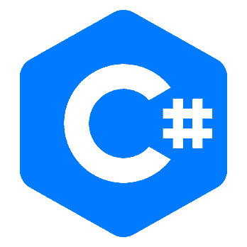

I'M PHILIP
A Programmer
A Programmer
|  |
ProgrammingAfter I have graduated in A.O.Floirendo National High School, I dedicated myself to become a programmer. My goal for now is to develop my own computer language and to develop my own games, But in reality I figured that being a programmer or a developer is difficult to achieve without hardwork, so I found myself to become a programmer to help other students in near future. |

|
Favorite E-SportWhen the first moba game was release the Moblie Legends, I started to love every hero specially lapu-lapu and my favorite mlbb streamer / gamer is Edgar Dumali aka ChoOx TV. |
Web DesigningI do prefer for web designing is VS code because it helps you to be a good web designer because of it's friendly and it has lots of shortcut keys or shortcut suggestions. |
C# ProgrammingI do like to program a software using visual studio, I prefer using VS studio to enhance my Programming skill I do some POS invetory software and experimenting ohter stuffs using VS studio.. |